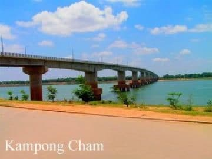

- Siem Reap
- Pailin
- Battambang
- Pursat
- Banteay Meanchey
- Oddar Meanchey
- Preah Vihear
- Kampong Thom
- Kampong Chhnang
- Kampongcham
- Stung Treng
- Ratanakiri
- Mondulkiri
- Kratie
- Tbongkhmum
- Preyveng
- Svay Rieng
- Kandal
- Phnom Penh
- Takeo
- Kampong Speu
- Kampot
- Kep
- Preah Sihanouk
- koh kong


Kampong Cham Travel Guides
General Information
Kampong Cham is the capital of the province of the same name and the third largest city in Cambodia. With its Mekong River location and relatively close proximity to Phnom Penh (123km) and Vietnam, Kampong Cham has always been an important trade and transportation hub. The highway from Phnom Penh is in excellent condition-you can get here in just under two hours by road or by the bullet boats that are a main mode of transportation between towns on the Mekong River. Either way it's a nice fide, with views of the rural countryside or river area, depending on which way you go.
The town itself is quaint and charming with its bustling morning river scene and wide boulevard streets beside the river. There are a few worthwhile attractions nearby and with it's location on the way by boat or road to Kratie, Mondulkiri, Rattanakiri and Stung Treng Provinces; it's a nice jump-off point. Kampong Cham is a mix of the old and the new, with a new temple being built in and around old ruins and the big ferry boats taking people and goods to the other side of the Mekong, right next to the construction of the first bridge ever built here.
Because there is little foreign investment and no massive tourism (almost every foreigner who comes here is a backpacker), this city is quite poor with a few modern buildings, though not lacking in French architecture from the colonial period. It is similar to many other Cambodian cities, being rather dirty, with garbage a common sight. The people of Kampong Cham are very friendly and open to engaging with tourists. If recent projects seem to be improving the state of things here (relative to other Cambodian cities), remember that both PM Hun Sen and former Phnom Penh Governor Chea Sophara are originally from this province.
Geography
This province is located in the eastern heard of Cambodia bordering following provinces: Kratie to the Northeast, Vietnam to the East, Prey Veng to the South, Kampong Chhnang to the west and Kampong Thom to the Northwest. Due to its advantageous location with the mighty Mekong flowing through the whole province, Kampong Cham has not much to fear of water supply.
The sprawling township of Kampong Cham stretching lazily along the west bank of the Mekong River has much to offer, from temples to deep forests of numerous rubber plantations (a legacy of the French colonial period) to peaceful stalls along the river where visitors can sit back and soak in the atmosphere over a beer or fresh coconut. Kampong Cham is also located at a crossroads. It is the gateway to exotic Mondulkiri Province through Kratie, and it's a common port city on the mighty Mekong. Via the national highway No 7 the province is easily to enter and to explore. The province is divided up into 16 districts, with 173 communes and 1,748 villages. Its geographic location is 12.00N, 105.46 E.
Population
Kampong Cham is the capital of the Cambodian province of Kampong Cham. It is the third largest city in Cambodia with a population of 1,914,152 people (2007) with 928,504 male and 985,648 female and is located on the Mekong River. Kampong Cham is 123 kilometres northeast from Phnom Penh and can be reached by either boats or a recently constructed asphalt road. It takes about 2 hours by vehicles or 2.5 hours by boats from Phnom Penh to the city of Kampong Cham.
Climate
Cambodia has sun almost year round. The average temperature is around 27 degrees Celsius; minimum temperature is about 16 degrees. December and January are the coolest months during the year. General information about the climate: - Rainy season: May - October (27-35c, with humidity up to 90%.)
- Cool season: November- March (17-27c)
- Hot season: March- May (28c -36c)
Economy
In an effort to entice foreign investment, the province is offering generous business concessions to those who wish to invest in rubber plantations inside the country. Kampong Cham and Kratie have an abundance of red soil and water resources, which create ideal conditions for the cultivation of rubber.
Generally, the people make their living from rubber and cashew nut plantation, fishing, rice farming and producing a rich array of fruits in fertile orchards, including durian, rambutans and lychees.